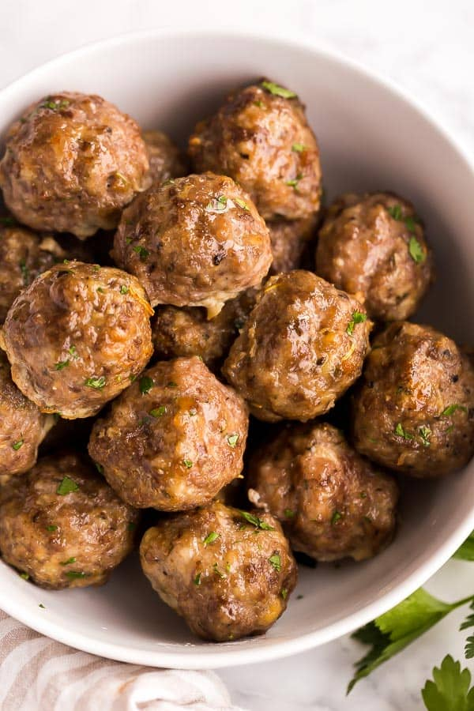

Meatballs

Description
Ingredients
- 2 large eggs
- 1/4 cup water
- 1 small onion, finely chopped
- 1-1/3 cups soft bread crumbs
- 2/3 cup grated Parmesan cheese
- 2 garlic cloves, minced
- 2 teaspoons Italian seasoning
- 1-1/2 teaspoons salt
- 2 pounds ground beef
Directions
- Preheat oven to 375°.
- In a large bowl, combine eggs, water, onion, bread crumbs, Parmesan cheese, garlic and seasonings; mix well.
- Crumble beef over mixture and mix well.
- Shape into 1-1/2-in. balls.
- Place meatballs on greased racks in shallow baking pans.
- Bake, uncovered, until no longer pink, 15-18 minutes.
Back to recipes